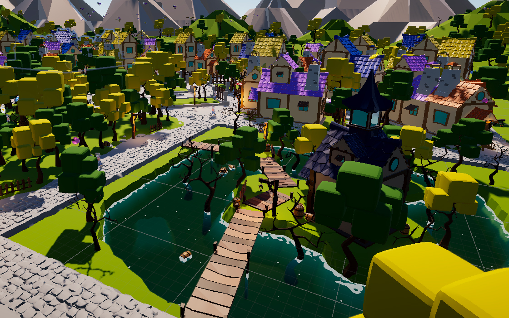

Introducción
Wicked Winds es un juego arcade competitivo donde controlas a Ashen, un brujo que realiza tareas en una ciudad mágica mientras vuela en su escoba. El objetivo es mantenerse en juego el mayor tiempo posible, ganando tiempo extra con cada misión completada. Con un estilo 3D lowpoly cartoon y controles de clics y deslizamientos, el juego está diseñado para navegador en PC y móvil. Su modelo freemium ofrece micropagos para skins y objetos, además de anuncios no intrusivos que dan monedas para mejorar la experiencia.
Sinopsis
Escribe la sinopsis del juego aquí. Esta sección puede contener detalles importantes sobre la historia y la jugabilidad.
Conoce a Ashen

Ashen
Descripción de Ashen. Aquí puedes detallar sus características y habilidades.

En Wicked Winds, tienes la libertad de personalizar a Ashen y adaptar su apariencia a tu estilo. Puedes cambiar el color de su cabello, ajustar el tono de su piel y seleccionar otros detalles que hagan único a este alegre brujito. La personalización permite que Ashen refleje tu propio toque mágico, dándole un aspecto especial mientras recorre la ciudad ayudando a sus habitantes.
Visita Stardust Town
Stardust Town es una encantadora ciudad de inspiración medieval, llena de toques mágicos y detalles fantásticos. Sus calles están iluminadas por farolas encantadas y adornadas con árboles y calderos mágicos que aportan un brillo especial al entorno. En el corazón de la ciudad se encuentra una plaza central animada, donde un mercadillo con coloridos puestos invita a explorar y descubrir los secretos de esta vibrante comunidad mágica.
